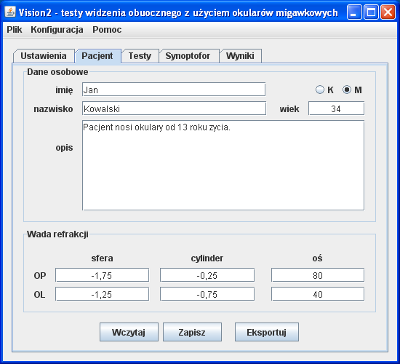

Dobrą praktyką jest przeprowadzanie wstępnego wywiadu z pacjentem przed przystąpieniem do badań. Oprócz podstawowych danych pacjenta badający powinien uzyskać również wszelkie informacje mogące ułatwić postawienie diagnozy. Program umożliwia przechowywanie tych danych razem z wynikami badania i ich późniejszą analizę.
Wszystkie dane pacjenta są pokazywane w zakładce "Pacjent" (rys. 1). Edycja tych danych jest możliwa na każdym etapie pracy z programem. Wyniki badania są prezentowane w zakładce "Wyniki". Nie jest możliwa edycja wyników, a jedynie ich przeglądanie.
Operacje na danych pacjenta i wynikach jego badań są możliwe za pomocą trzech przycisków w dolnej części zakładki pacjent:
vis). Funkcja dostępna jest również w menu "Plik" pod nazwą "Otwórz".vis). Funkcja dostępna jest również w menu "Plik".txt). Funkcja dostępna jest również w menu "Plik".